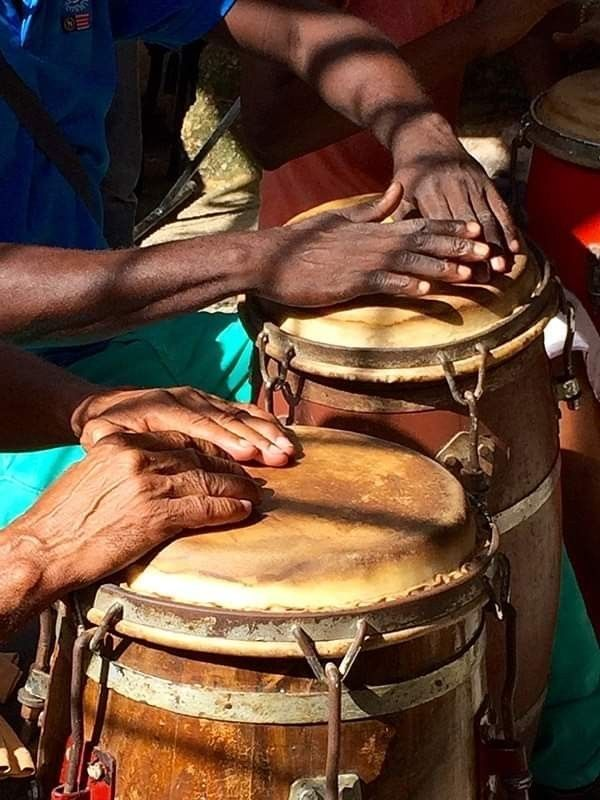

representatividade
local
A representatividade afro-brasileira local é de extrema importância para que todos os cidadãos possam aprender e conhecer mais sobre essa cultura. Essa representatividade pode acontecer de diversas formas, como por meio de eventos, empreendedores com negócios que remetem à cultura afro, esportes, culinária, entre outros. Abaixo estão alguns exemplos de como essa representatividade ocorre no Litoral Norte (SP).
